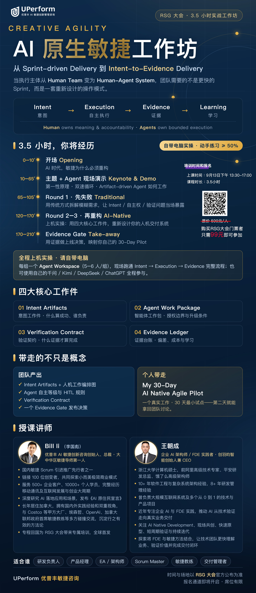

主题演讲



| 时间 | 9月12日 | ||
|---|---|---|---|
| 主会场 | Make Agile Great Agent 让敏捷更智能 | ||
| 08:00 - 09:00 | 签到 | ||
| 09:00 - 09:10 | 主持开场 | ||
| 09:10 - 09:40 |
《从老师傅的手，到 AI 陪练的脑子 —— AI-ready 重塑制造业经验传承产品化》 申导 国际Scrum联盟CST最高级认证敏捷教练·华人之光、AI 驾驭工程专家、教育智能体创始人、腾讯云TVP、AI 雪鸟会发起人 |
||
| 09:40 - 10:10 |
《协调成本归零之后——分布式"10 倍工程师"时代，研发组织的重构》 张路宇 Dify（GitHub 超 14 万 Star）创始人 / CEO |
||
| 10:10 - 10:30 | 合影&茶歇 | ||
| 10:30 - 11:00 |
《AI落地的终极拼图——类脑智能分身》 蔡炎松 上海羲悉智能科技有限公司创始人、CTO 入选中国“国千”领军人才，曾任华为2012实验室类脑计算组算法首席专家 |
||
| 11:00 - 11:30 |
《敏捷已死？还是有机会真正活出敏捷性？——AI对组织发出的一连串灵魂追问prompts》 Bill Li 大中华区敏捷导师第一人、优普丰AI敏捷创新咨询创始人、总裁 |
||
| 11:30 - 12:00 |
《AI原生敏捷：为快速智能体式产品交付而重生》 William Li Costco开市客全球首席AI工程师 前Google、Microsoft、Walmart及高速成长创业公司高管 兼任加州大学伯克利分校信息与数据科学硕士项目AI方向核心顾问 |
||
| 12:00 - 13:30 | 午餐&午休 | ||
| 下午 | |||
| 时间/会场 | 分会场1：AI方法论与工程落地 | 分会场2：业务视野与AI增长跃迁 | 分会场3：组织进化与AI敏捷实战 |
| 主持- 单冰 助教- 田骧娉 |
主持- 张涵玥 助教- 武可 |
主持- 周晓华 助教- 文吉 |
|
| 13:30 - 14:10 |
《Harness新范式：建模驱动开发》 曹偲 TocoAI 创始人、CEO 前网易云音乐 CTO |
《少子化逼出的 AI 转型：一家 1000 人教育出版公司的敏捷突围实战》 周龙鸿 Scrum Alliance全球董事会董事 台湾唯一的Scrum Alliance认证培训师（CST） 亚洲首位PgMP认证者 |
《组织敏捷穿越技术周期》 李宜函博士 南京卓欧信息COO 前混沌大学组织变革 |
| 14:10 - 14:50 |
《企业AI落地的真实路径：来自一线项目的实践观察》 眭阳 ToB增长系统架构师、数智化与AI商业化顾问 万物数智创始人、腾讯云TVP 素问智能合伙人、悠络客前联合创始人 |
《面向人工智能时代个人能力塑造-产品经理的跃迁转型》 黄一菠 融至道战略咨询董事长 毋渊森 具有12年银行从业经验、资深企业级教练 |
《敏捷+AI，如何极致提升工作效能》 曹希 东风汽车金融市场部总监 |
| 14:50 - 15:10 | 茶歇 | ||
| 15:10 - 15:50 |
《传统制造企业AI知识服务体系建设实践与思考》 孙雅宾 清图数据项目总监 |
《AI + BLM业务领先模型重塑战略规划到落地的效率》 Jason Zhang CIO及供应链运营专家，CIO时代特聘讲师 上海交通大学计算机应用博士 曾任职IBM、Accenture、Baxter、Coca-Cola等世界500强 |
《浑然一体的车企AI敏捷交付转型》 曹智清&蔡建强 大众酷翼科技车联网云端产品经理 |
| 15:50 - 16:30 |
《AI分形红利-敏捷开发的四层增长密码》 徐宇青 启迪问智联合创始人&首席战略专家 AI智能体开发和应用联盟理事长、互联网大厂培训师 |
《AI Agent 如何真正创造商业价值——ONES AI Agent 转型实践经验分享》 冯斌 ONES CTO |
《AI来了，敏捷怎么玩？——LeSS规模化敏捷+绿色项目管理，让企业跑得更快、更聪明、更可持续》 刘伟 亚信科技组织级敏捷项目管理专家 |
| 16:30 - 17:10 | / | / | / |
| 时间 | 9月13日 | ||
| 上午 | |||
| 09:00 - 09:30 | 雪鸟会-Open Space（熊节、Bill Li、申导、杨建良、庄表伟） | ||
| 09:30 - 09:45 | 企业参评颁奖 | ||
| 09:45 - 10:00 | 休息 | ||
| 10:00 - 11:00 |
工作坊1：《做AI指挥官：赋予新角色，引领而非恐慌》 单冰 资深项目治理专家 AI项目落地陪跑教练、职业成长教练 |
工作坊2：《AI原生组织中，人类的价值是什么》 罗涛：前用友集团开发管理部总经理 国内首位获得CTC+MCC 双认证的华人 Andy：资深敏捷教练 |
工作坊5：《Play Like an FDE, Lead Like a Coach - 如何在企业内部设立及培养FDE-Coach岗位/角色 ——从解决一个AI问题，到培养一支能够持续交付AI成果的团队》 Bill：大中华区敏捷导师第一人，《AI原住民宣言》作者 马俊：上海仪电数字智能有限公司 创新事业部，腾讯云架构师上海同盟 理事长 |
| 11:00 - 12:00 |
工作坊3：《Human X AI 协作编程实验室》 Ivy：敏捷教练与程序员 专注于推动企业的 AI 转型 Iris：敏捷开发践行者 长期在金融企业中推动敏捷实践落地 |
工作坊4：《从“控场”到“共振”：Scrum Master的另一种能力》 Martha RSG社区忠实活跃fans、Scrum Master 流瑜伽导师/认证颂钵疗愈师 |
|
| 下午 | |||
| 13:30 - 17:00 |
全球首发课程《Creative Agility: AI原生敏捷，从意图到可验证成果——全新的人类—智能体协作的敏捷交付系统》 授课讲师：Bill Li 大中华区敏捷导师第一人、国内敏捷Scrum引进推广先行者之一 优普丰AI敏捷创新咨询创始人、总裁 链接100位创变者，共同探索小而美极简商业模式 服务过500+企业客户，10000+个人学员，完整经历移动通讯及互联网发展与创业大周期 深度研究AI落地应用和场景，发布《AI原住民宣言》 授课讲师：王朝成 企业 AI 架构师 / FDE 实践者 创羽昀智能创始人兼CEO 浙江大学计算机硕士，前阿里高级技术专家、平安研发总监、饿了么高级架构师 |
||